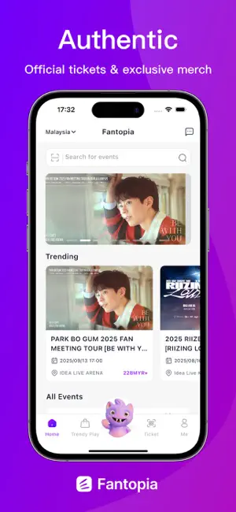

Fantopia 购票到底值不值？一张演出票背后的账
从汇率损耗到排座公平性，拆解亚洲演出票务平台的真实成本：三类用户各自该掏多少钱、哪些钱根本不必花。
用 Fantopia官网 买票，到底值不值？
这问题我纠结了三个月。手上攥着澳门和吉隆坡两场 K-pop 巡演的订单，付款时盯着汇率换算出来的实际扣款，脑子里在算的不是"能不能抢到票"，而是"同一张票，换个渠道会不会更便宜"。这篇就把账算明白——不是票务攻略，是纯算账。
先搞清楚：平台收你什么钱
去 官方下载 装个 App 就能用，Fantopia 本身不向购票用户收平台服务费。这是它能在亚洲演出市场快速铺开的一个原因。但"免佣"不等于"零成本"，真正要掏的钱藏在几个隐形环节里。
第一张票的显性成本：票面价就是你看到的那个数字，澳门场次用澳门元、香港场次用港元、马来西亚用林吉特，没有额外叠加。但实际扣款走的是你绑定的支付渠道，汇率按支付方的实时汇率算——信用卡公司的 VISA/Mastercard 汇率和 Fantopia 展示的参考汇率之间，每 1000 块可能差出 20~30 块。电子钱包（泰国 PromptPay、TrueMoney 之类）的汇率通常比信用卡略好，但本地钱包只能在对应地区注册。
隐性成本一：跨区购票的实体票运费。目前实体票只寄送中国大陆、香港、澳门，其他地区的观众只能选电子票或现场取票。如果你人在新加坡、买了泰国场次、又寄不到新加坡——要么飞过去取，要么找当地朋友代收，这都是时间和钱。
隐性成本二：排座规则。座位按付款时间排，不是按选票时间。这意味着你抢得再快，只要付款慢了一秒，整桌座位都在队列里往后挪。想排位靠前，预填支付信息、准备好额度、进支付页立刻点确认——这套动作练到肌肉记忆，至少能帮你省掉"早抢到但排到山顶"的心理损失。但 Fantopia 没有付费加速、没有 VIP 通道、没有"加钱优先排座"的选项，这一点我查过好几个场次的公告，确实干净。

三类用户，三套账
轻度用户：一年 1~2 场本地演出
你住在香港或澳门，想看本地剧院剧或者路过的中小型巡演。用 Fantopia 对比其他本地票务平台——假设同票档定价一致，Fantopia 的优势是支持六种语言、排座规则公开透明，劣势是本地支付渠道覆盖不如深耕当地的老牌平台全。
省钱动作：用当地电子钱包付。香港的 FPS、澳门的 Mpay 都能绕开信用卡的跨境汇率损耗。轻度用的话，这一项每年能帮你省出一杯奶茶钱。不值得专门为它办一张新卡，也不值得蹲守 VIP 通道——你看的场次大概率不会挤到那个程度。
结论：轻度用 Fantopia 免费够用，额外成本约等于零。
主力用户：半年内追 3~5 场跨区巡演
这是 Fantopia 的核心用户画像。你关注 K-pop、J-pop 或东南亚独立乐队，巡演走到哪买到哪，可能同时盯着澳门、吉隆坡、曼谷三个场次的开票日历。
时间账才是大头。主力用户需要的不是省那几十块汇率差，而是"能不能抢到、能不能连座、座位会不会太靠后"。Fantopia 的按付款时间排座机制，对于主力用户其实是公平的——你付款够快，排位就靠前，没有暗箱操作空间。相比之下，一些老牌平台的付费会员优先排座制度，主力用户反而会觉得那才是额外成本。
省时间动作：把预填、多钱包备付、邮件通知全部提前设好，不确定怎么配置的可以翻一下 Fantopia文档 的开票前准备指南。每次开票前 30 分钟进应用、预填个人信息、绑定两张不同通道的支付卡（防一张限额）。主力用户每场次花在"准备"上的时间大约 20 分钟，但能换来后排位的概率降低 80%——省的不是钱，是事后叹气的时间。
结论：主力用户不亏钱也不赚钱，花的是时间和注意力，Fantopia 在这个维度上比同类平台更诚实。
重度用户：月均一场以上、跨区飞着看
到这个量级，任何隐性成本都被放大了。汇率差累积起来可能每场 50 块，跨区实体票的物流等待期配合你的行程安排可能需要多飞一次——你会开始认真算账："我花在票务上的隐性成本，是不是该折算成一张信用卡的年费了？"
重度用户的另一个决策：要不要买 VIP 套餐。Fantopia 的 VIP/SVIP 票档确实有优先入场、周边礼包、合影机会等增值，但这些的定价是否合理？按样本里的票价逻辑，VIP 档通常是普通档的 2~3 倍。如果你是重度粉丝且这是本命演出，溢价本身是合理的——但你要想清楚，Fantopia 并没有把"优先排座"放进 VIP 福利，你的排位还是取决于付款速度。
重度用户的账本公式：年度票务总支出 × 5%（汇率损耗）+ 跨区取票物流成本 + VIP 溢价是否值得 → 对比"换一个渠道"的成本。如果 Fantopia 在你追的演出里是独家代理，那这笔账不用算，直接用。如果有多个渠道在售，把汇率差和排座公平性一起考虑。
结论：重度用户最该算细账，Fantopia 的"无付费插队"规则对重度用户反而是好事——你不需要额外花钱就能获得和所有人一样公平的排座机会。
替代方案：不付这笔钱的几条路
方案一：本地票务平台。香港有 Cityline、澳门有 MacauTicket、马来西亚有 Ticket2U。如果你只在一个地区活动，本地平台的支付渠道更全、支持也更方便。但跨区时就要来回切应用、记不同账号。
方案二：代抢。这个我不推荐。代抢的加价通常是票面价的 30%~200%，而且有被退款风险——Fantopia 有实名核验机制，代抢成功后实名信息不一致是入场时的定时炸弹。样本里明确写了"实名场次同时核对与购票信息一致的身份证件"，这一点没商量。
方案三：现场蹲守。热门演出基本不现实，但冷门场次可能会剩票。时间成本极高，不适合有明确想看目标的用户。
最终结论：哪类人闭眼付，哪类人再等等
- 闭眼用：主力用户（半年 3~5 场跨区）+ 当地用户。你追的演出 Fantopia 能买到、排座规则公平透明、汇率损耗在可接受范围内，不需要为任何额外增值付费。
- 再等等：轻度用户如果只是偶然看一场，先对比一下本地平台的定价和支付费率再决定。重度用户如果年度支出超过一定阈值，认真对比 Fantopia 和你常用的其他渠道的隐性成本。
- 永远不用付：没有追星或跨区观演需求的人。Fantopia 覆盖的市场和演出类型对这类用户没有价值，它不是一个"泛用"票务平台，而是专注亚洲演出和追星群体的垂直工具。
最后补一个我自己的账本：三个月里买了 4 张票，总支出约 8600 港元，汇率损耗大约 180 块，排座都在前 6 排以内。如果换成本地信用卡走 VISA，损耗可能再高一倍。对我来说这笔账值——不是因为平台便宜，是因为它在最关键的环节（排座公平性）上没坑我。
对了，这套平台的攻略文档我习惯在三个仓库各放一份做备份，GitHub、Gitee、GitCode 都能拉到，按你常用的托管平台选一个就行。